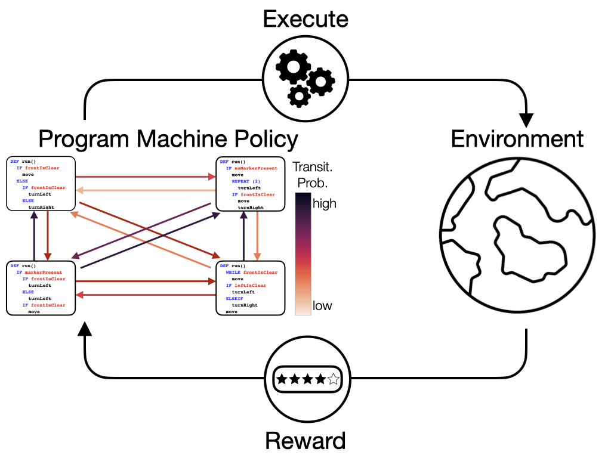
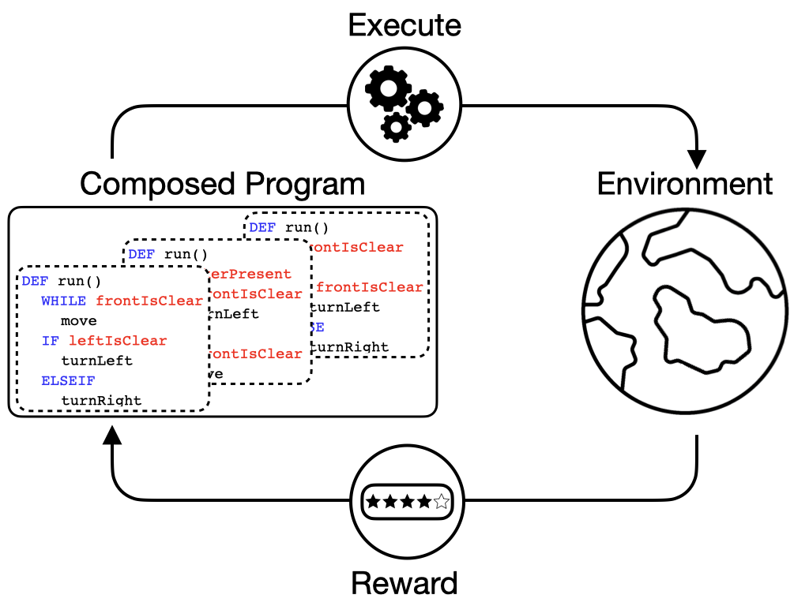
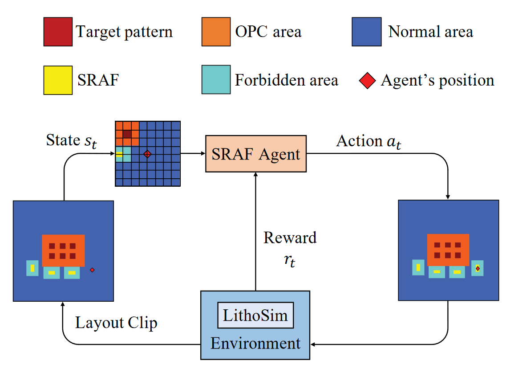
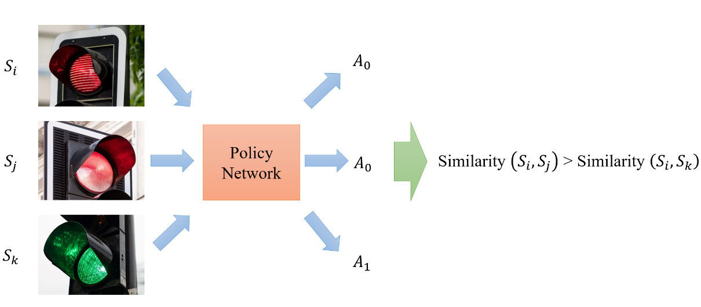

|
Research
I'm interested in Machine Learning, Reinforcement Learning(RL), and Electronic Design Automation (EDA). Much of my research is about interpretability and generalization of RL and applying machine learning techniques to solve EDA problems.
|
|

|
Addressing Long-Horizon Tasks by Integrating Program Synthesis and State Machines
Yu-An Liu,
Chen-Tao Lee,
Guan-Ting Liu*,
Pu-Jen Cheng,
Shao-Hua Sun,
Generalization in Planning Workshop at Neural Information Processing Systems (NeurIPS) 2023
arXiv
This work proposes Program Machine Policies (POMPs), which bridge the advantages of programmatic RL and state machine policies, allowing for the representation of complex behaviors and the address of long-term tasks.
|
|

|
Hierarchical Programmatic Reinforcement Learning via Learning to Compose Programs
Guan-Ting Liu*,
En-Pei Hu*,
Pu-Jen Cheng,
Hung-yi Lee,
Shao-Hua Sun,
International Conference on Machine Learning (ICML) 2023
Project Page
/
arXiv
Our proposed hierarchical programmatic reinforcement learning (HPRL) framework can produce program policies that describe out-of-distributionally complex behaviors and directly assign credits to programs that induce desired behaviors.
|
|

|
Sub-Resolution Assist Feature Generation with Reinforcement Learning and Transfer Learning
Guan-Ting Liu*,
Wei-Chen Tai*,
Yi-Ting Liu,
Iris Hui-Ru Jiang,
James P. Shiely,
Pu-Jen Cheng,
International Conference on Computer-Aided Design (ICCAD) 2022
ACM Digital Library
We are the first to generate SRAFs using reinforcement learning to address SRAF interference and produce mask-rule-compliant results directly.
|
|

|
Improving Generalization with Cross-State Behavior Matching in Deep Reinforcement Learning
Guan-Ting Liu,
Guan-Yu Liu,
Pu-Jen Cheng,
International Conference on Autonomous Agents and Multiagent Systems (AAMAS) 2022 (Extended Abstract)
ACM Digital Library
We propose a novel technique that regularizes representation learning by comparing state embedding similarities across different state-action pairs.
|
|
{kind=link}